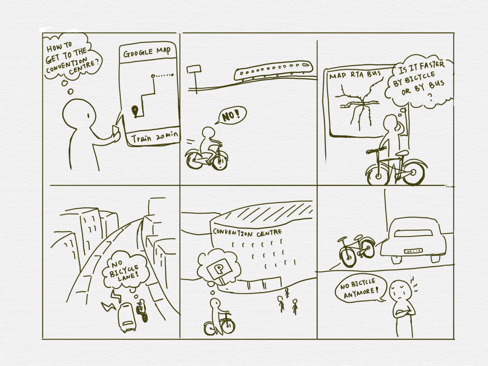

CHI4GOOD: Design for Non-profits
Keywords: brainstroming, market research, storyboard
Background and Motivation
At CHI2017, I volunteered at CHI4GOOD and worked with Bicycle Colorado, a local non-profit organization, to help them solve a design problem.
Beyond their day-to-day operations, the PR manager of Bicycle Colorado wanted to explore some new areas and opportunities the org could work on. For the one-day workshop, she wanted us to figure out the most imminent problem faced by their targets, and come up with solutions that she could use to convince the board.
Problem identification
About 60% of Colorado residents own a bike but are more inclined to driving personal cars or using public transportation instead. While driving cars are convenient, they are expensive and introduce more carbon footprint. Hence, most commuters choose public transportation or biking over driving cars.
A semi-structured interview is conducted with 5 people in our user group, each of which takes 30 minutes. They have a diverse background and experiences in the program. We hope to understand our users’ information seeking and communication habits.
Prior work by Bicycle Colorado had identified decreased bicycle riding owing to safety concerns such as, presence of a bicycle route, lighting, bike storage and so on. For instance, a commuter performing a short trip such as visiting a grocery store is generally concerned with the road (e.g., highway vs. non-highway), speed limit, whether the route has a bike sign painted on the road, whether the route is along a secluded area, etc. Hence, safety concerns override the desire/need to ride a bike, even though many commuters consider biking healthy, environmentally sustainable, and less expensive.
Oftentimes, Colorado commuters tend to use a combination of transportation means when getting from one place to another. For instance, a office goer will ride a bike from home to train station, take train to downtown Denver, and ride bike from train station to office.
Although there are several public transportation means such as buses, trains, shared rides etc. with their own schedules, there is a lack of one system that pools all the schedules together to help commuters plan their day based on their need. For instance, an office goer who wants to travel to work by bike and train and attend a meeting at a different location later during the day either on bike or local bus will have to access multiple information sources such as train/bus schedules and personal calendar. Further, there is a lack of a system that helps commuters decide if a bike route is safe, or if a train/bus route is less expensive.
Target users
Colorado commuters with smartphone device and using public transportation/owning a bike.
User Profile
Katherine is a young mom who works full time job in Denver. She lives outside the city, and takes the train to downtown Denver every morning. The train station is too far away for her to walk from home, so she tends to go there by bike. However, she finds it annoying to arrive at the train station finding out that the train has just left. Also, even as a bike enthusiast who owns two bikes (one at home and one at office), she avoids riding to places that she is not familiar with, because many roads are not bike-friendly and bike parks are hard to find.
Storyboard
Preliminary Solutions
Route planning tool from location A to B that will:
- Integrate bike route planning with other public transportations;
- Crowdsourcing data for route suggestion, and optimize the route based on:
- Efficiency
- Safety
- Popularity
- Fitness
- Environment sustainability
Essentially, we envision a smartphone app that will present data from multiple sources such as bus/train schedules and presents a map with personalized routes.
This will involve users selecting a source and destination location with stops and selecting preferences as to the type of public transportation or biking.
This app will allow users to select times and be reminded when it is time to leave, in addition to being intimated to bike faster/slower depending on how much time is left for the user to get to a destination.
The app will provide more information on locations where a bike can be parked when a user reaches a destination.
The app will also provide statistics on the number of people taking a route - we believe this will aid commuters understand route safety.
The app will include a social component where users will contribute information such as bike rack locations, alternative routes and their experience, feedback on an app-suggested route. We brainstormed including motivational affordances and incentives as means for continued user engagement.
Action Plan
We suggested Bicycle Colorado to start off with a focus group session to understand users, identify personas and their needs.
- Internal focus group: The first phase of the focus group will be held within Bicycle Colorado Organization. The goal of this session is to decide whether the problem is a preeminent issue for the organization to solve, and collect feedback on the feasibility of the potential solution. Also, gaining support from the management team will help push forward the project.
- Focus group with participatory design: The second phase of the user study involves people from the biker community in Colorado. The goal of this session is to learn more about the needs of the end users, and to help develop the requirements for the application.
We discussed topics such as co-design, storyboarding, interactive prototyping and evaluation as means for Bicycle Colorado to use prior to actually developing a working app. We also suggested reaching out to Social Coder from ACM for development support when time comes.
Team
- Katherine Fuller (Bicycle Colorado representative)
- Yiran Ma
- Hamed Alavi
- Annika Muehlbradt
- Preethi Srinivas